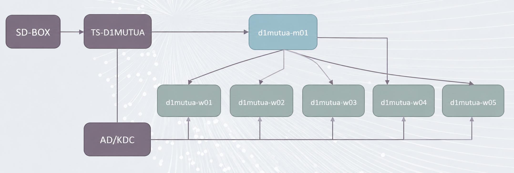

This tutorial aims to help you to be familiar on how to use spark/hdfs cluster inside bulle D1MUTUA.
We will follow the below steps in this tutorial.
The below figure shows the general architecture of the cluster

TS-D1MUTUA: is the main server(Windows) which you connect to via the SD-BOX.d1mutua-m01, d1mutua-w01/w02/w03/w04/w05: are the servers which form the spark/hdfs cluster. The end users can not access
them directly, but through spark/hdfs client which are installed/configured on TS-D1MUTUA.This step happens inside the TS-D1MUTUA server (Windows).
You can visit the following url by using the Firefox web browser.
There is a shortcut created in
Bureau->Raccourcis->Cluster. You only need to double-click on it. AFirefoxweb browser will be opened automatically.The first connection may take few seconds, because of the kerberos ticket and user groups checking. You may also need to accept the certificat if you see warnings.
To facilitate the installation of Spark and HDFS client, CASD has developed an installation script.
You can find this script in C:\RO_Cluster\install_spark.ps1.
Open a powershell terminal, and run the below command
cd C:\RO_Cluster
#run the installation script
.\install_spark.ps1
After this step, you will be prompted with two questions:
- which spark version you want to install? choose 4.1.3
- Confirm you choice. If you encounter any error in this step. copy the error message and send to
datascience@casd.eu
Open a new powershell terminal, and run the below command
# check the hdfs file system
hdfs dfs -ls /
# check user home folder, replace your_user_name by your current D1MUTUA user name(e.g. D1MUTUA_P_LIU0000).
hdfs dfs -ls /users/<your_user_name>
# for the first time, if you have not upload any data, the output will be empty.
# If you already have data, for example, for /users/D1MUTUA_P_LIU0000, you should see the below output
-rw-------+ 3 D1MUTUA_P_LIU0000 hadoop 76 2026-03-06 11:18 /users/D1MUTUA_P_LIU0000/stats.csv
drwx------+ - D1MUTUA_P_LIU0000 hadoop 0 2026-03-10 17:16 /users/D1MUTUA_P_LIU0000/tmp
You can only access your own home folder. If you try to access the home folder of other users, you should see
Permission deniederror.
You can also try to access the project folder
# check the projects folder
hdfs dfs -ls /projects
# try to access a project
hdfs dfs -ls /projects/BCL_EEC
If you are not in group
BCL_EEC, you should seePermission deniederror.
CASD has prepared some demo data and demo scripts to help user to use the spark cluster. To avoid conflicts between users, we require you to copy this demo Folder to your personnel documents folder.
Use the same powershell terminal of the above section 4
# copy demo folder
Copy-Item -Path "C:\Users\Public\Documents\demo" -Destination "$HOME\Documents" -Recurse
# goto your personnel documents folder
cd "$HOME\Documents\demo"
# check if you have the demo folder
ls
You should see the contents of the demo folder in the output
As spark is a framework for distributed computing, the data must be also distributed. That's why spark can't use
data from the local file system of TS-D1MUTUA server. As a result, we must transfer data from local file system
to hdfs cluster
Use the same powershell terminal of the above section 4.1
# check data in the local file system
ls 01-hdfs
# you should see stats.csv in the output.
# goto the 01-hdfs folder
cd 01-hdfs
# now upload data from `local file system` to `hdfs cluster`
# replace your_user_name by your current D1MUTUA user name(e.g. D1MUTUA_P_LIU0000).
hdfs dfs -put stats.csv /users/<your_user_name>/
# check the data in hdfs
hdfs dfs -ls /users/<your_user_name>/
# download data from `hdfs cluster` to `local file system`
# "$HOME\Documents" means the `Documents` folder in `TS-D1MUTUA`
hdfs dfs -get /users/<your_user_name>/stats.csv "$HOME\Documents"
The
TS-D1MUTUAserver is a Windows server, so the directory separator is\, the HDFS cluster servers are Linux servers, so the directory separator is/. When your data is in HDFS, use/, if your data is inTS-D1MUTUA, use\.
In this section, we will test if you can use the spark client to connect to the cluster.
Use the same Powershell terminal of section 4.1.
First check if you have spark installed correctly in your environment.
# check current spark runtime version
spark-submit --version
# you should see the below output
Welcome to
____ __
/ __/__ ___ _____/ /__
_\ \/ _ \/ _ `/ __/ '_/
/___/ .__/\_,_/_/ /_/\_\ version 4.1.3
/_/
Using Scala version 2.13.17, OpenJDK 64-Bit Server VM, 17.0.18
Branch HEAD
Compiled by user on 2026-07-12T02:17:43Z
...
We already created a pyspark job in demo\02-spark-submit, it's called job1.py.
# go to the 02-spark-submit folder
cd "$HOME\Documents\demo\02-spark-submit"
# you can view the content of the job1.py
cat .\job1.py
To submit this job to the cluster, you need to run the below command
# don't forget to replace your_name
spark-submit --master yarn --deploy-mode cluster --name=test_spark_submit_<your_name> job1.py
You can notice in the above
spark-submitcommand, there are two important options
- master is yarn : yarn is the resource manager(which job run on which worker).
- deploy-mode cluster: spark driver will also run on the cluster side. So nothing runs inside
TS-D1MUTUAserver. As a result, you don't need to activate python environment and pyspark You can check the status of your job via yarn web UI. We will see how torun spark in client modein the next section.
The spark-submit only works in Powershell terminal.
To make the cluster token management is completely transparent for the end user, CASD has written a script which overwrites the origin
spark-submitcommand. This script is only activated in Powershell. As a result, thespark-submitcommand will ont work inCMD terminal.
We have seen how to submit jobs to the cluster. For exploring data, you may want to run your spark job interactively(client mode).
In this mode the spark driver runs on TS-D1MUTUA server. So we need to install a python virtual environment and pyspark
To do so, we need to open an anaconda terminal. Goto Raccourcis-> Python, double-click on Miniconda Prompt Python3.13,
you should see a popup anaconda terminal. Now you can run the below command to create a python virtual environment.
# check your python version
python -V
# create a virtual env with the current python interpreter version
conda create -n spark_venv python --offline
# list all existing virtual env
conda env list
# you should see spark_venv in the output
# activate the python virtual venv
conda activate spark_venv
# check installed libs
pip list
# install pyspark, the pyspark version must match the spark version in the cluster
pip install pyspark==4.1.3
# install jupyterlab
pip install jupyterlab
Now you have all the required dependencies to use spark cluster in interactive mode with pyspark.
The
condacommand only visible inanaconda terminal. If you open apowershellorcmdterminal, the commandcondadoes not exit inside them. So if you want to use python virtual environment, you need to gotoRaccourcis->Python, double-click onMiniconda Prompt Python3.13, to open ananaconda terminal.
To check if your installation is successful or not, let's close the existing Miniconda Prompt Python3.13, and open
a new one.
# goto your Documents\demo\03-notebooks
cd Documents\demo\03-notebooks
# if you open a new `anaconda terminal`, don't forget to activate the `virtual environment(e.g. spark_venv)`
conda activate spark_venv
# if you are already in the activated `virtual environment(e.g. spark_venv)`, you can run the below command
# to open a jupyter lab.
jupyter lab --port=0
# In the GUI, create a new jupyter notebook and copy the below code in it
The option
--port=0is very important. If you forget this option, you may see error messagesPort already in use. Normally a browser will be launched automatically. If you don't see a browser, you can open a firefox and copy the jupyterlab url in the firefox.
In the notebooks, you should find a jupyter notebook called 01.pyspark_read_write_hdfs.ipynb
You can run the blocks one by one and check the outputs of the blocks
The most important blocks are:
The below code shows a simple code example
######### Import CASD pyspark wrapper ########
import getpass
import sys
from pathlib import Path
# Add CASD custom library path before imports
CASD_LIB_PATH = Path.home() / "AppData" / "Local" / "casd-tools" / "casd-token-conf"
# check before launch
if CASD_LIB_PATH.exists():
sys.path.append(str(CASD_LIB_PATH))
else:
print(f"[WARNING] Custom library path does not exist: {CASD_LIB_PATH}")
# import casd spark wrapper
from casd_spark import get_spark
############### initiate spark driver ##############
# get user name
username = getpass.getuser()
# set spark job name
app_name = f"test_pyspark_for_{username}"
print(f"[INFO] Initializing Spark Session: {app_name}")
spark = get_spark(app_name=app_name)
The block 7 will write the result in CSV format in your hdfs home folder /users/<user-name>/tmp/count_resu_csv
The block 8 will write the result in Parquet format in your hdfs home folder /users/<user-name>/tmp/count_resu_parquet
The block 9 will do two import things:
Restart the kernel button.To use sparklyr with the kerberos authentication in Windows, we also need a CASD sparklyr wrapper. This wrapper takes care of the cluster authentication token lifecycle.
You can find a complete R script in Documents\demo\04-sparklyr, which allows you to create a spark session with sparklyr
on the cluster and read data from HDFS, and write results on the HDFS
This script has four important blocks
The below R script shows how to import CASD sparklyr wrapper
# The wrapper reqires the below packages, you only need to install it once
install.packages("sparklyr")
install.packages("dplyr")
# Dynamically extract the current username
current_user <- Sys.info()[["user"]]
message(sprintf("Running Spark session for OS User: %s", current_user))
# Construct CASD sparklyr wrapper path
casd_conf_path <- file.path(
"C:", "Users", current_user, "AppData", "Local",
"casd-tools", "casd-token-conf", "casd_spark.R"
)
# import CASD sparklyr wrapper
if (file.exists(casd_conf_path)) {
source(casd_conf_path, encoding = "UTF-8")
} else {
stop(sprintf("Configuration script not found at expected path: %s", casd_conf_path))
}
# import the required package
library(sparklyr)
library(dplyr)
Now we need to configure the cluster parameters
# Safe connection state tracking
sc <- NULL
# Ensure YARN application containers are cleaned up even if the script throws an error
on.exit({
if (!is.null(sc) && connection_is_open(sc)) {
message("Closing Spark connection and releasing YARN resources...")
casd_spark_disconnect(sc)
}
}, add = TRUE)
# ==============================================================================
# 1. Cluster Configuration & Network Settings
# ==============================================================================
config <- spark_config()
# YARN Resource Allocation
config$spark.executor.instances <- 2
config$spark.executor.cores <- 1
config$spark.executor.memory <- "2g"
config$spark.driver.memory <- "2g"
# Network & Connectivity
config$spark.driver.bindAddress <- "0.0.0.0"
config$spark.submit.deployMode <- "client"
# Security Tokens for HDFS and Hive metastore delegation
config$spark.yarn.security.tokens.hdfs.enabled <- "true"
config$spark.yarn.security.tokens.hive.enabled <- "true"
Now we have all we need to initiate a spark session, let's start our spark session. This may take few seconds, please be patient.
# Establish YARN Connection
sc <- casd_spark_connect(master = "yarn", config = config)
You may see some error messages about when sparklyr updating Rstudio connection pane: Rstudio can't find log file
logs/log4j.spark.logThis error message does not impact the execution of your sparklyr code, you can just ignore it
Once the spark session is created, you can do your usual sparklyr data analysis, this is zero syntaxe change.
After you finish your analysis, you need to close your spark session. Otherwise, the reserved resource will never be freed.
# close the spark session and free the resources
casd_spark_disconnect(sc)
If you want to restart a spark session, you need to restart the R kernel to generate a new cluster authentication token.